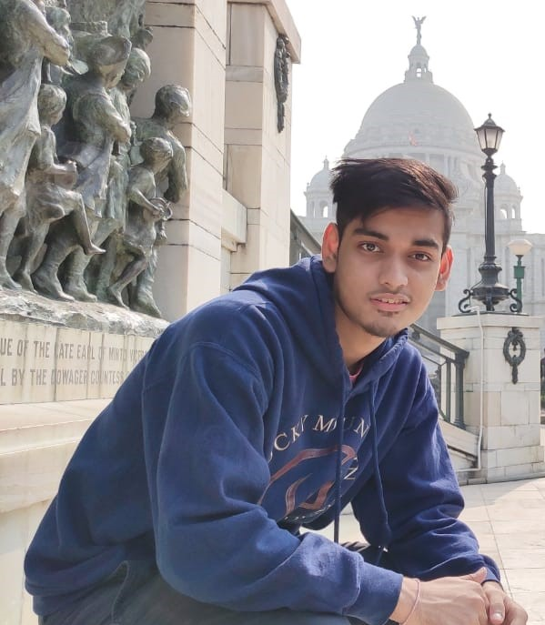
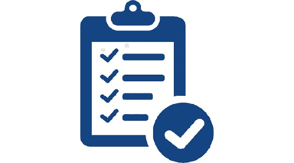

AYUSH DEY
 +918961289950
+918961289950
.jpg) Skills
Skills
- Languages: C, C++,HTML,CSS, JavaScript, Python
- ML Libraries: NumPy, Pandas, Matplotlib, RegEx
- Platform: Windows
- Tools: MS Word, PowerPoint Presentation, MS Excel
- Soft Skills: Leadership,Fund Raising Time Management
Certification
- Coursera: Web Design for Everybody
- NPTEL:Ethics In Engineering Practice ,Enhancing Soft Skills and Personality ,The Joy of Computing using Python
- Google Digital Unlocked : The Fundamentals of Digital Marketing
Achievements- Hacker Rank 5 star in Algorithm and Problem Solving
Extra-CurricularActivities
- Represented Kolkata Region in KVS National Sports Meet in Table Tennis(2012,13,14,15)
- Secured 1st position in North(24)Pgs District Table-Tennis Camp(2011)
- Secured 3rd position in KVS Regional Sports Meet in Table-Tennis held at Kharagpur(2014)
- Secured 2nd position in KVS Regional Sports Meet in Table-Tennis held at Burdwan (2015)
Marketing Intern | Leads Flick
Dec 2020 - Dec 2020
- Leads Flick is a freelancer organization which combines global digital technologies to help businesses build their brand presence
- Responsible for User Acquisition Brand Awareness
Campus Ambassador | 7 Lakes Fest-IIM Culcutta
Nov 2020 - Dec 2020
- Responsible for carrying out 7 Lakes Fest promotion & other outreach activities
- Played an instrumental role in attracting record registration through promotional activities
Education
B.P. Poddar Institute Of Management And Technology
2019- Present
- Currently pursuing B.tech in Information Technology
- 3rd Semester(C.G.P.A - 9.77)
Kendriya Vidyalaya Barrackpore(Army)
2019
- Passed AISSCE with 85.8 % Marks
Kendriya Vidyalaya Barrackpore(Army)
2017
- Passed AISCE with 8.4 (CGPA)
 Projects
Personal Portfolio Website
March 2021 - April 2021
- Developed the website using HTML,CSS and JS
Twitter Sentiment Analysis using Python
Nov 2020 - Feb 2021
- The program is to analyze the Tweets of an individual Twitter account in terms of Subjectivity and Polarity.
- Individual tweets were identified as positive, negative and neutral and calculate the percentage of positive, negative and neutral tweets.
Position of ResponsibilityBusiness Development(Fund Raising) | Jankalyan Multipurpose
Education Society
- Jankalyan Multipurpose Education Society is a NGO where I was responsible to raise funds for the education of under privileged children and also received a Letter of Recommendation from the NGO.